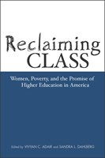

<body bgcolor="#FFFFFF" text="#000000" link="#0000FF" vlink="#CC0000" alink="#CC0000"><center><hr width="350" size="1" align="center" noshade>The double-edged impact of policy and education in the lives of poor women<hr width="350" size="1" align="center" noshade><p><a href="https://cdcshoppingcart.uchicago.edu/Cart/ChicagoBook.aspx?ISBN=9781592130214&&PRESS=temple" target="_top">Buy this book!</a> | <a href="https://cdcshoppingcart.uchicago.edu/Cart/Cart.aspx?PRESS=temple" target="_top">View Cart</a> | <a href="https://cdcshoppingcart.uchicago.edu/Cart/Cart.aspx?PRESS=temple" target="_top">Check Out</a></p><p></p></center><!--none//--><h1>Reclaiming Class</h1>
<H2>Women, Poverty, and the Promise of Higher Education in America</H2>
<h3>edited by Vivyan C. Adair and Sandra L. Dahlberg</h3>
<P>cloth 1-59213-021-6 $85.50, Apr 03, <FONT COLOR=#990033>Available</FONT>
<br>paper 1-59213-022-4 $32.95, Apr 03, <FONT COLOR=#990033>Available</FONT>
<br>Electronic Book 1-59213-841-1 $32.95 <FONT COLOR=#990033>Available</FONT>
<BR> 280 pp
6x9
5&nbsp;tables 1&nbsp;figure
</P><BLOCKQUOTE><I>"</i>Reclaiming Class<i> is truly first-rate. An extremely thoughtful, illuminating analysis of the role class plays in American society, particularly the perception of poverty, the stigma of poverty on those who are or who have ever been poor and the role of higher education in the survival of poor women. What is perhaps most valuable about the book is the combination of the personal with the theoretical and the analytic. The writing is vivid, immediate and compelling; the volume has an intensity that I believe will capture readers' attention and involve them in the debates and dilemmas poor women face."</i>
<br>&#151<b>Ruth Sidel</b>, PhD, Professor of Sociology, Hunter College and author of <i>Keeping Women and Children Last</i><i></I></BLOCKQUOTE>
<p><I>Reclaiming Class</I> offers essays written by women who changed their lives through the pathway of higher education. Collected, they offer a powerful testimony of the importance of higher learning, as well as a critique of the programs designed to alleviate poverty and educational disparity. The contributors explore the ideologies of welfare and American meritocracy that promise hope and autonomy on the one hand, while also perpetuating economic obstacles and indebtedness on the other.
<p>Divided into the three sections, <I>Reclaiming Class</I> assesses the psychological, familial, and economic intersections of poverty and the educational process. In the first section, women who left poverty through higher education recall their negotiating the paths of college life to show how their experiences reveal the hidden paradoxes of education. Section two presents first person narratives of students whose lives are shaped by their roles as poor mothers, guardian siblings, and daughters, as well as the ways that race interacts with their poverty. Chapters exploring financial aid and welfare policy, battery and abuse, and the social constructions of the poor woman finish the book.
<p>Offering a comprehensive picture of how poor women access all levels of private and public institutions to achieve against great odds, <I>Reclaiming Class</I> shows the workings of higher learning from the vantage point of those most subject to the vicissitudes of policy and reform agendas.
<BR>&nbsp;<h2>Excerpt</h2><P>Excerpt available at <a href="http://www.temple.edu/tempress">www.temple.edu/tempress</a></p>
<BR>&nbsp;<h2>Reviews</h2>
<p><i>"Adair and Dahlberg have compiled a daring collection that challenges both the core values of punitive welfare reform policies and the myth of meritocracy in American higher education. It is a moving demonstration of the best kind of social justice scholarship."</i>
<br>&#151<b>Carolyn Law</b>, Dissertation Adviser in the Graduate School at Northern Illinois University and co-editor of <i>This Fine Place So Far from Home: Voices of Academics from the Working Class</i> and <i>Out in the South</i> (both Temple)
<p><i>"Every college professor no matter what discipline should read this gripping and compelling collection of narratives and analysis about poor women and higher education. This sometimes brilliant book deconstructs and subverts the conventional wisdom about poor women and women on welfare offering instead a sociological imagining of their lives that sloughs off stereotypes to open up voices within. It portrays higher education as both problematic and opportunity, and offers compelling policy analysis."</i>
<br>&#151<b>Sari Knopp Biklen</b>, Cultural Foundations of Education, Syracuse University
<p><i>"</i>Reclaiming Class<i> casts a harsh eye on the interaction between welfare policy, university culture, and the constituency that is attempting to better their lives by using one entity to access the other."</i>
<br>&#151<b><i>Anthropology and Education Quarterly</I></b>
<p><i>"</i>Reclaiming Class<i> is an important book that will inform readers about the short and long term effects of welfare reform on the capacity of women to use higher education as a means of social advancement. Offering a rare and accessible discussion of both welfare policy and welfare stigma and their impact upon people's capacity to learn within American institutions of higher education, it brings much of the current literature on welfare and welfare stereotypes into a concrete realm that students will understand in connection with their own lives. For that reason especially, it is a very valuable book."</i>
<br>&#151<b><i>Radical Teacher</i></b>
<p><i>"The authors offer a solid and updated policy analysis, identifying reforms that support poor and working-class women and uncovering the policies that drive them away from the academy."</i>
<br>&#151<b><i>Affilia: Journal of Women and Social Work</i></b>
<p><i>"[T]his book is uniformly well written and conceived, with a coherency that is difficult to achieve in edited volumes.... </i>Reclaiming Class<i> adds substantially to literature on the classed and gendered experiences of poverty class women in higher education. Hopefully, it will also inform policymakers at all levels who have the ability to clear the path to higher education for this group of people."</i>
<br>&#151;<b><i>NWSA Journal</i></b>
<p><i>"This book seems likely to be very useful in a number of educational settings, inside and outside the academy, because of its diverse approaches to the issues. Further, nearly all the professional educators and policy analysts have had firsthand acquaintance with poverty and/or welfare, and this enriches their narratives and their analyses both. One can scarcely read this text without affirming and reiterating the final words of Vivyan Adair: ‘We stand at a critical juncture.’"</i>
<br>&#151<b><i>Feminist Collections: A Quarterly of Women’s Studies Resources</i></b>
<BR>&nbsp;<h2>Contents</h2><P>
<p>Acknowledgments
<br>Introduction: Reclaiming Class: Women, Poverty, and the Promise of Higher Education in America &#150 Vivyan C. Adair and Sandra L. Dahlberg
<br>Speech Pathology: The Deflowering of an Accent &#150 Laura Sullivan-Hackley
<p><b>Part I: Educators Remember</b>
<br>1. Disciplined and Punished Poor Women, Bodily Inscription, and Resistance through Education &#150 Vivyan C. Adair
<br>2. Academic Constructions of "White Trash," or How to Insult Poor People without Really Trying &#150 Nell Sullivan
<br>3. Survival in a Not So Brave New World &#150 Sandra L. Dahlberg
<br>4. To Be Young, Pregnant, and Black: My Life as a Welfare Coed &#150 Joycelyn K. Moody
<br>5. If You Want Me to Pull Myself Up, Give Me Bootstraps &#150 Lisa K. Waldner
<p><b>Part II: On The Front Lines</b>
<br>6. If I Survive, It Will Be Despite Welfare Reform: Reflections of a Former Welfare Student &#150 Tonya Mitchell
<br>7. Not By Myself Alone: Upward Bound with Family and Friends &#150 Deborah Megivern
<br>8. Choosing the Lesser Evil: The Violence of the Welfare Stereotype &#150 Andrea S. Harris
<br>9. From Welfare to Academe: Welfare Reform as College-Educated Welfare Mothers Know It &#150 Sandy Smith Madsen
<br>10. Seven Years in Exile &#150 Leticia Almanza
<p><b>Part III: Policy, Research, And Poor Women</b>
<br>11. Families First-but Not in Higher Education: Poor, Independent Students and the Impact of Financial Aid &#150 Sandra L. Dahlberg
<br>12. The Leper Keepers: Front-Line Workers and the Key to Education for Poor Women &#150 Judith Owens-Manley
<br>13. "That's Why I'm on Prozac": Battered Women, Traumatic Stress, and Education in the Context of Welfare Reform &#150 Lisa D. Brush
<br>14. Fulfilling the Promise of Higher Education &#150 Vivyan C. Adair
<p>About the Contributors
</P><BR>&nbsp;<H2>About the Author(s)</H2>
<table><tr><td valign="top"><img src="/tempress/authors/1646_au1.gif" height="90" width="75"></td><td width="100%" valign="middle"><p><b>Vivyan C. Adair</b> is Assistant Professor in the Women's Studies Department at Hamilton College, and Director of The ACCESS Project, which supports low-income parents in their efforts to exit inter-generational poverty through higher education and pre-career employment.</P></td></tr></table><table><tr><td valign="top"><img src="/tempress/authors/1646_au2.gif" height="90" width="75"></td><td width="100%" valign="middle"><p><p><b>Sandra L. Dahlberg</b> is Associate Professor of English at the University of Houston-Downtown.</P></td></tr></table>
<P>Contributors: Leticia Almanza, Spring Woods High School, Houston, Texas; Lisa D. Brush, University of Pittsburgh; Andrea Harris, University of Washington; Deborah Megivern, Washington University; Sandy Smith Madsen, Emory University; Judith Owens-Manley, Hamilton College; Tonya Mitchell; Jocelyn K. Moody, University of Washington; Nell Sullivan, University of Houston-Downtown; Lisa K. Waldner, University of St. Thomas, and the editors.</P>
<BR><H2>Subject Categories</H2>
<p><A HREF="/tempress/education.html" TARGET="_top">Education</a>
<BR><A HREF="/tempress/gender.html" TARGET="_top">Gender Studies</a>
<BR><A HREF="/tempress/women.html" TARGET="_top">Women's Studies</a>
</p>
<BR><h2 class="inpageheading">In the series</H2>
<P><I><a href="http://www.temple.edu/tempress/teaching_learning.html" onMouseOver="window.status='Click for other books in this series!'; return true;" onMouseOut="window.status=''; return true;" target="_top">Teaching/Learning Social Justice</a></i>, edited by Lee Anne Bell.
</p><p>The series <I>Teaching/Learning Social Justice</I>, edited by Lee Anne Bell, is concerned with educational practices that promote democracy and equality in a diverse society. "Social Justice" is used as an umbrella term for the many topics and concerns connoted by the terms democracy, equality, and diversity, while the term "Teaching/Learning" emphasizes the essential connections between theory and practice that this series examines. Books in the series will look at a broad range of educational arenas to examine the many ways people engage diversity, democracy, and social change in classrooms and communities. The series will draw on the lived experiences of people who struggle to critically analyze and challenge oppressive relationships and institutions, and to imagine and create more just and inclusive alternatives. The series' focus will be on both popular education and education in formal institutions, and its audience is educators and activists who believe in the possibility of social change through education.</p>
<p align="center"><a href="https://cdcshoppingcart.uchicago.edu/Cart/ChicagoBook.aspx?ISBN=9781592130214&&PRESS=temple" target="_top">Buy this book!</a> | <a href="https://cdcshoppingcart.uchicago.edu/Cart/Cart.aspx?PRESS=temple" target="_top">View Cart</a> | <a href="https://cdcshoppingcart.uchicago.edu/Cart/Cart.aspx?PRESS=temple" target="_top">Check Out</a></p><p><font face="Arial" size="1"><a href="copyright.html" onMouseOver="window.status='Web Copyright Policy';return true;" onMouseOut="window.status=''" title="Web Copyright Policy">&copy;</a> 2015 <a href="http://www.temple.edu" target="new" onMouseOver="window.status='Link to Temple University home page';return true;" onMouseOut="window.status=''" title="Link to Temple University home page">Temple University</a>. All Rights Reserved. http://www.temple.edu/tempress/titles/1646_reg.html</font></p>